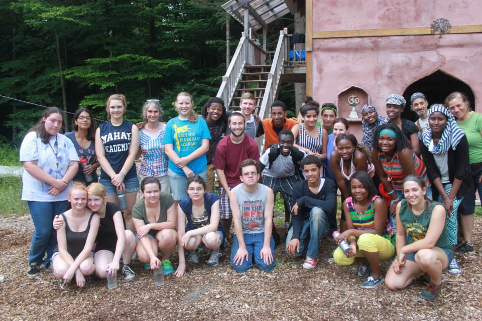
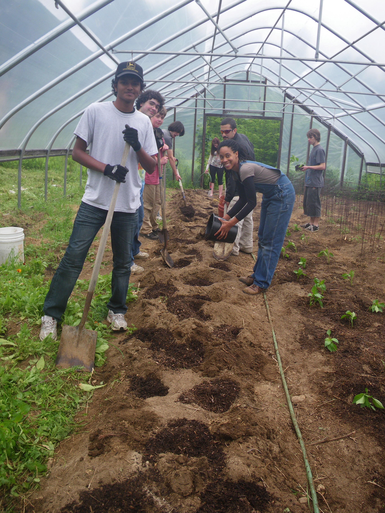
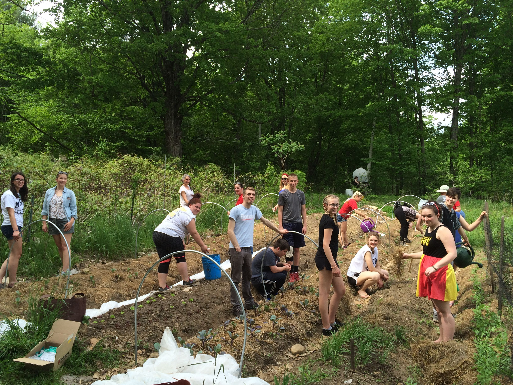
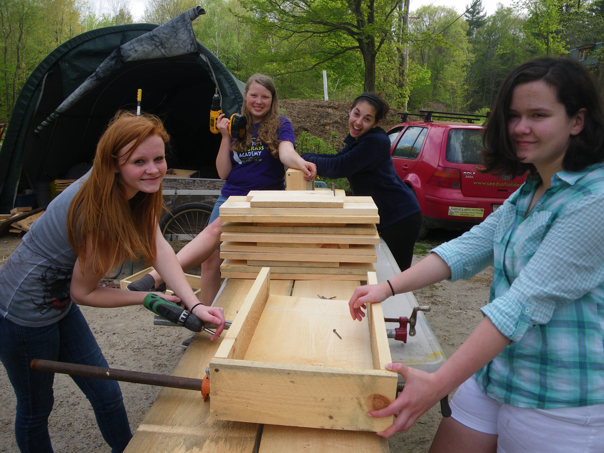
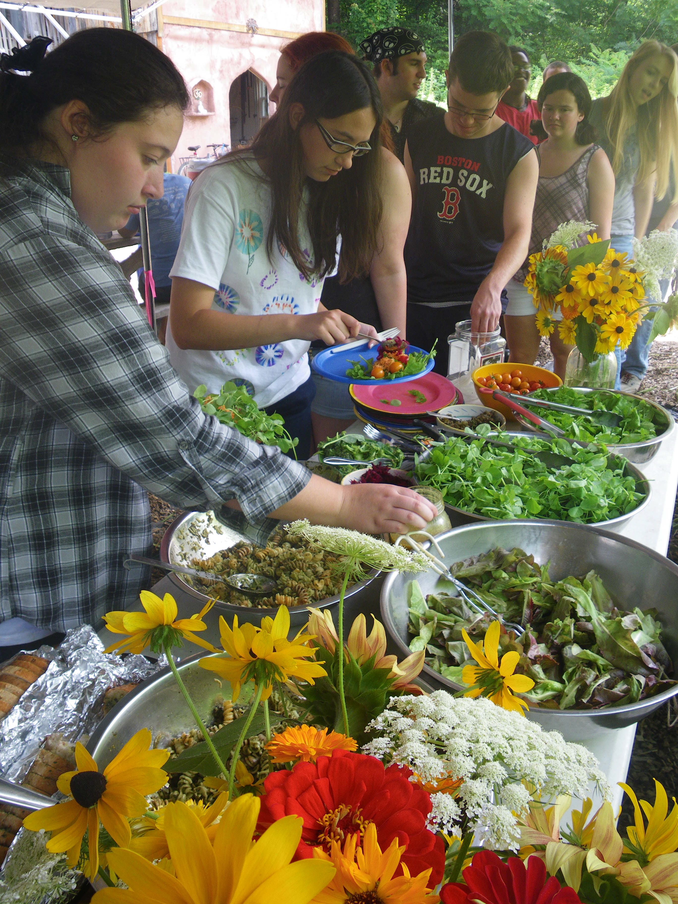
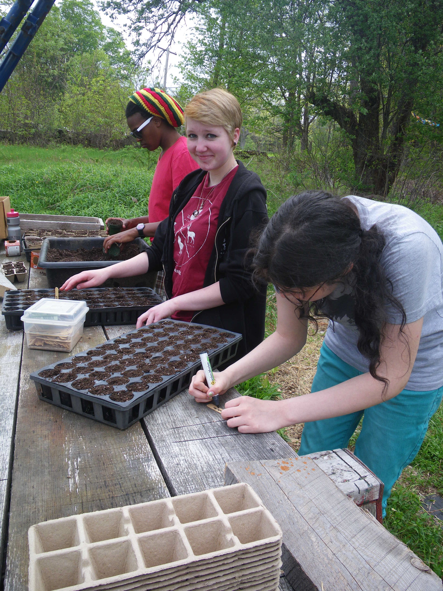

Seeds of Solidarity
Grow Food Everywhere
SOL (Seeds of Leadership) Garden
Stay tuned for info about our 2020 ‘Craft Your Own Life’ mini-internship *that link was from 2019 just fyi!. This is a multi-day program that we will hold for ages 20-24.

We celebrated 20 years of SOL (Seeds of Leadership) Garden in 2018, our longest running program, and an amazing, life-changing experience for youth and staff alike! We have transitioned this to our Craft Your Own Life Program, and hope others will learn from our resources and curricula below.

Enjoy a new, youth made video that shows a day in the life of our SOL Garden program!
Since the programs inception in 1998, 400 SOL Garden participants, most low-income and underemployed, have gained valuable life, college and career skills as they have cultivated a quarter acre garden and donated thousands of pounds of vegetables to families and senior citizens in our low-income community constructed their own 40′ solar greenhouse and designed and built the “SOL Shack” meeting space helped planted and tend gardens throughout the community at a shelter for homeless families, elementary schools, a hospital and health center, a library and for local families Created and sold hundreds of ceramic SOL Bowls Given over 30 presentations at conferences and events participated in Earth and Spirit youth retreats and outdoor adventure, workshops in nutrition, cooking, and healing arts, celebration art, and helped thousands learn, celebrate, and play at the North Quabbin Garlic and Arts Festival.

Inspire your own program and teaching! We are happy to share our curriculum, "Food for the SOL: Youth, Food, Justice and Community Building”
Enjoy the SOL Garden Blues we wrote with musician Katie Sachs, then performed at the North Quabbin Garlic and Arts Festival.

"I got a lot more confident in my ability to say and do things…to get a job done, roll up my sleeves and do it…SOL Garden is unbelievable and tremendously important. It pretty much carved out the life I have right now…There were people at SOL Garden who actually cared about what I had to say." -Shawn

"You come here and it’s like whatever is stressing you out vanishes because you know you have all these people here to support you and grow food with. There’s not drama, there’s no stress it’s just like the most relaxed atmosphere…the best place to be." -Vanessa

"Because of SOL Garden, I now think about my health, and what I eat. I think about how I live my life and the effects and impressions I make on others. I think about the world and how I have a choice to be an active citizen. I think about what small things I can do to make a difference and I think about big ideas that could change the world." -Kacie

"Coming here is the best decision I ever made." -Jen
SOL Garden is free to local youth, and made possible through grants from the MA Cultural Council Youth Reach Program, The AT and T Aspire Program, The Green Leaf Foundation, and individual contributions.